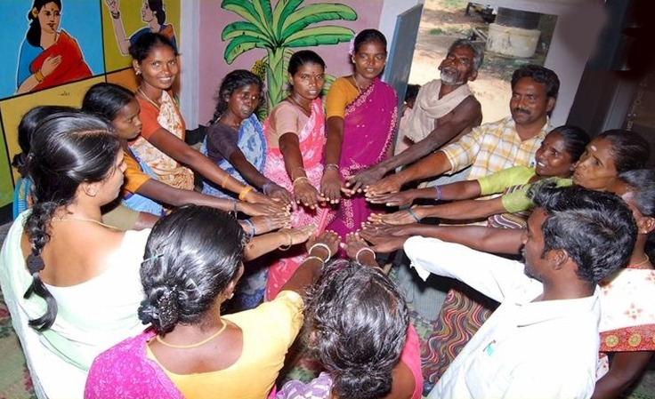
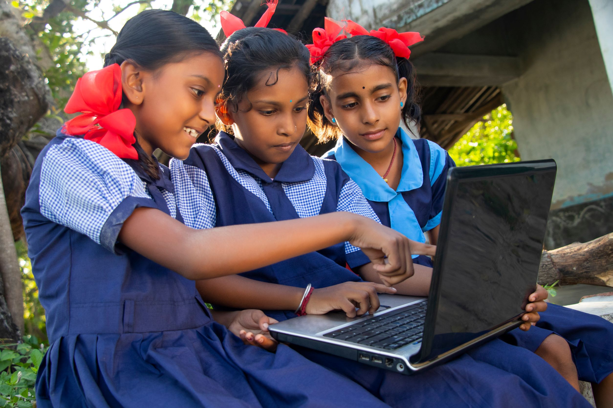

1.பெண்களுக்கான சுயவேலைவாய்ப்புத் திட்டம்

பெண்களுக்கான SINA வெல்ஃபேரின் சுயவேலைவாய்ப்புத் திட்டம் என்பது, பெண்கள் தங்கள் தலைவிதியை பொறுப்பேற்க அதிகாரம் அளிப்பதை நோக்கமாகக் கொண்ட ஒரு மாற்றும் முயற்சியாகும். சிறப்புப் பயிற்சி, வழிகாட்டுதல் மற்றும் நிதியுதவி ஆகியவற்றின் மூலம், தொழில் முனைவோர் உணர்வை வளர்த்து பெண்கள் தங்கள் சொந்தத் தொழிலைத் தொடங்கவும் நடத்தவும் உதவுகிறோம்.
SINA Welfare’s Self Employment Scheme for Women is a transformative initiative aimed at empowering women to take charge of their destinies. Through specialized training, mentorship, and financial support, we nurture the spirit of entrepreneurship, enabling women to start and run their own businesses.


2.பெண்களின் சுய வேலைவாய்ப்புக்கான கடன் திட்டம்

பெண்கள் தங்கள் முயற்சிகளைத் தொடங்க மூலதனத்தை அணுகுவதில் எதிர்கொள்ளும் சவால்களைப் புரிந்துகொண்டு, எங்களின் SINA வெல்ஃபேரின் கடன் உதவித் திட்டம், ஆர்வமுள்ள பெண் தொழில்முனைவோருக்கு ஆதரவாக வடிவமைக்கப்பட்டுள்ளது. இந்தத் திட்டத்தின் மூலம், பெண்கள் தங்கள் வணிக யோசனைகளை யதார்த்தமாக மாற்றுவதற்கு, நிபுணர்களின் வழிகாட்டுதலுடன் நிதி உதவியை வழங்குகிறோம்.
Understanding the challenges faced by women in accessing capital to start their ventures, our SINA Welfare’s Loan Assistance Scheme is designed to support aspiring women entrepreneurs. Through this scheme, we offer financial aid, along with expert guidance, to help women turn their business ideas into reality.


3.இளைஞர்களுக்கான வேலையில்லாத் திண்டாட்டத்தை ஒழிக்க திட்டம்
இளைஞர்களின் வேலையில்லாத் திண்டாட்டத்தை ஒழிப்பதற்கான SINA வெல்ஃபேரின் விரிவான திட்டம், சரியான திறன்கள் மற்றும் வாய்ப்புகளுடன் இளைஞர்களை ஆயத்தப்படுத்துவதில் தொகுக்கப்பட்டுள்ளது. திறன் மேம்பாட்டு திட்டங்கள், தொழில் ஆலோசனை மற்றும் வேலை வாய்ப்பு உதவி ஆகியவற்றின் மூலம், வேலையற்ற இளைஞர்களை மேம்படுத்துவதற்கான முழுமையான அணுகுமுறையை நாங்கள் வழங்குகிறோம்.
SINA Welfare’s comprehensive plan to eradicate youth unemployment is anchored in equipping young individuals with the right skills and opportunities. Through skill development programs, career counseling, and job placement assistance, we provide a holistic approach to empower unemployed youth.


4குழந்தைகளின் கல்வி மற்றும் கற்றலின் தேவை குறித்த நடவடிக்கை

SINA வெல்ஃபேர் நிறுவனத்தில், கல்வி ஒரு செழிப்பான சமுதாயத்தின் மூலக்கல்லாகும் என்று நாங்கள் நம்புகிறோம். குழந்தைகளின் கல்வி மற்றும் கற்றலுக்கான எங்கள் செயல் உந்துதல் அணுகுமுறை, பின்தங்கிய குழந்தைகளுக்கு தரமான கல்விக்கான அணுகலை வழங்குவதில் கவனம் செலுத்துகிறது. புலமைப்பரிசில்கள், கல்வி வளங்கள் மற்றும் மேம்படுத்தப்பட்ட கற்றல் சூழல்கள் மூலம், நாங்கள் இளம் மனங்களை வளர்த்து, அறிவு மற்றும் திறன்களால் அவர்களை மேம்படுத்துகிறோம்.
At SINA Welfare, we believe that education is the cornerstone of a thriving society. Our action-driven approach towards children's education and learning focuses on providing underprivileged children with access to quality education. Through scholarships, educational resources, and improved learning environments, we nurture young minds, empowering them with knowledge and skills.


5.தாழ்த்தப்பட்டவர்களின் தன்னம்பிக்கையை மேம்படுத்துதல்

ஒருவரின் வெற்றிப் பயணத்தில் தன்னம்பிக்கையின் முக்கியத்துவத்தை நாம் புரிந்துகொள்கிறோம். SINA வெல்ஃபேர், தாழ்த்தப்பட்டவர்களின் இதயங்களில் தன்னம்பிக்கை மற்றும் நெகிழ்ச்சியை ஏற்படுத்துவதன் மூலம் அவர்களுக்கு அதிகாரமளிக்க நாங்கள் உறுதிபூண்டுள்ளோம். பட்டறைகள், வழிகாட்டுதல் மற்றும் திறன்-வளர்ப்பு நடவடிக்கைகள் மூலம், தனிநபர்கள் தங்கள் திறனைக் கண்டறியவும், சவால்களை சமாளிக்கவும், புதிய நம்பிக்கையுடன் வாய்ப்புகளைத் தழுவவும் ஒரு ஆதரவான சூழலை நாங்கள் வழங்குகிறோம்.
We understand the importance of self-confidence in one's journey to success. At SINA Welfare, we are committed to empowering the underprivileged by instilling self-belief and resilience in their hearts. Through workshops, mentorship, and skill-building activities, we provide a supportive environment where individuals can discover their potential, overcome challenges, and embrace opportunities with newfound confidence.


6.நகரம், நகர பராமரிப்பு, அரசாங்கத்துடன் ஒத்துழைத்தல்
சமூகங்களுக்கு அதிகாரம் அளிக்கும் துடிப்பான நகர்ப்புற இடங்களை உருவாக்க உறுதிபூண்டுள்ள மாற்றும் முயற்சியான SINA வெல்ஃபேருக்கு வரவேற்கிறோம். எங்கள் நகர பராமரிப்பு திட்டத்தின் மூலம், நாங்கள் சுத்தமான மற்றும் நன்கு பராமரிக்கப்பட்ட சுற்றுப்புறங்களை வளர்த்து, குடியிருப்பாளர்களின் வாழ்க்கைத் தரத்தை மேம்படுத்துகிறோம். அரசாங்கத்துடன் ஒத்துழைப்பதன் மூலம், நகர்ப்புற சவால்களை திறம்பட எதிர்கொள்ளும் சக்திகளை ஒன்றிணைத்து, நிலையான மற்றும் வளமான எதிர்காலத்திற்கான விரிவான தீர்வுகளை செயல்படுத்துகிறோம்.
Welcome to SINA Welfare, a transformative initiative committed to building vibrant urban spaces that empower communities. Through our City Maintenance program, we nurture clean and well-kept environments, enhancing the quality of life for residents. By collaborating with the government, we unite forces to address urban challenges effectively, implementing comprehensive solutions for a sustainable and prosperous future.


7.கிராமப்புற விவசாயிகளின் வளர்ச்சியை ஊக்குவிக்க
SINA வெல்ஃபேர் நிறுவனத்தில், கிராமப்புறங்களில் உள்ள விவசாயிகளின் வளர்ச்சி மற்றும் செழிப்பை வளர்ப்பதில் நாங்கள் கடமைப்பட்டுள்ளோம். விவசாயம் நமது தேசத்தின் முதுகெலும்பாகும், மேலும் அவர்கள் செழிக்கத் தேவையான அறிவு, வளங்கள் மற்றும் ஆதரவுடன் விவசாயிகளை மேம்படுத்துவதில் நாங்கள் நம்புகிறோம். பல்வேறு முயற்சிகள் மூலம், நவீன விவசாய நுட்பங்கள், நிலையான நடைமுறைகள் மற்றும் மேம்பட்ட தொழில்நுட்பங்களுக்கான அணுகலை நாங்கள் வழங்குகிறோம்.
At SINA Welfare, we are committed to fostering the growth and prosperity of farmers in rural areas. Agriculture is the backbone of our nation, and we believe in empowering farmers with the knowledge, resources, and support they need to thrive. Through various initiatives, we provide access to modern farming techniques, sustainable practices, and advanced technologies. Additionally, we offer financial assistance, training programs, and market linkages to help farmers increase their productivity and income.


8.இரத்த தான முகாம்கள் நடத்தும் திட்டம்

இரத்த தான முகாம்களை நடத்தும் எங்கள் SINA வெல்ஃபேர் திட்டம் எங்கள் சமூகத்தில் உயிர்காக்கும் தாக்கத்தை ஏற்படுத்த அர்ப்பணிக்கப்பட்டுள்ளது. தன்னலமற்ற நன்கொடையாளர்கள் மற்றும் சுகாதாரப் பங்காளிகளின் ஆதரவுடன், நாங்கள் தொடர்ந்து இரத்த தான முகாம்களை ஏற்பாடு செய்கிறோம்.
Our SINA Welfare Scheme of Conducting Blood Donation Camps is dedicated to making a life-saving impact in our community. With the support of selfless donors and healthcare partners, we organize regular blood donation camps. These camps play a crucial role in addressing blood shortages and providing timely transfusions to those in need.